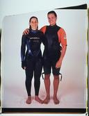
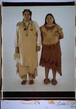

| 607 Franklin Street, Cambridge, Massachusetts 02139 voice: 617/876-6416 fax: 617/492-4925 email: elsad@comcast.net URL: http://elsadorfman.com born: Cambridge, Massachusetts 1937 Education: B.A. Tufts College 1959 (cum laude, French Literature) M. Ed. Boston College (elementary education) PublicationsElsa's Housebook - A Woman's Photojournal , Godine, 1974No Hair Day , 2003 Selected American CollectionsBoston Public LibraryColby College Museum Davis Museum of Art, Wellesley College DeCordova Museum, Lincoln, MA Fogg Museum, Harvard University Healey Library, UMASS/Boston Museum of Fine Arts, Boston, MA National Portrait Gallery, Washington, D.C. Portland Museum of Art, Portland, Maine Princeton University Graphic Arts Collection San Francisco Museum of Modern Art University Art Museum, Berkeley, California Selected Individual Exhibitions1998 "Self-Portraits, 1973-1997" ; Gallery NAGA, Boston1995 "Eight Portraits" , Museum of Fine Arts, Boston 1994 "Forty Ways to Fight the Fight Against AIDS", Courtland Jessup Gallery, Provincetown (traveling) 1987 "These People Live in the 1980s", Museum of Art, Aarhus, DM 1985 "Myself and Other Women", Image Gallery, Aarhus, DM 1983 "Twenty-Nine American Women", Yuen Lui Gallery, Seattle 1977 "Impressions of Women", University Art Museum, Berkeley, California 1975 "Portraits of Women", York University, Toronto, Canada 1973 "Women", Everson Museum, Syracuse, New York 1972 "Allen Ginsberg", Focus II Gallery, New York City Selected Group Exhibitions2000 DeCordova Museum , Lincoln, Massachusetts1998 DeCordova Museum, Lincoln, Massachusetts 1997 Fogg Art Museum , Harvard University, Cambridge, Massachusetts 1994 "Portraits", Fuller Museum, Boston, Massachusetts 1993 "Portraits", Fitchburg Art Museum, Fitchburg, Massachusetts 1993 "His People, Her People, Their People", Boston Center For the Arts 1993 "Opening Exhibit", Davis Museum of Art, Wellesley College 1992 "Women Photographers", Museum of Fine Arts, Boston 1991 "Contemporary Photographers", Fogg Museum 1990 "Figuring the Body", Museum of Fine Arts, Boston, Massachusetts 1990 "Elsa Dorfman and Allen Ginsberg", FotoFest, Houston,Texas 1985 "Aktfoto", Munich Art Museum, Munich, DM 1984 "Contemporary American Portraits", University of New Mexico 1983 "Boston Now", Institute of Contemporary Art, Boston, Massachusetts 1981 "Portraits of Men", Museum of Fine Arts, Boston, Massachuetts 1978 "New England Photographers", Museum of Fine Arts, Boston, Massachusetts 1975 "Women of Photography - An Historical Survey", San Francisco Museum of Art |



 |
Find Elsa's Books


Please change your links and bookmarks to elsadorfman.com!
Elsa thanks her cybergodmother, photo.net, her longtime, most generous host at furfly.com, and her current web host Mike Sisk at TCP/IP Ranch, LLC.
Copyright 1970-2010 © Elsa Dorfman.
Inquiries for the use of Elsa's content are welcomed!
Please
read these guidelines.
Contact
Elsa Dorfman via email or send Website Feedback to her webmaster.